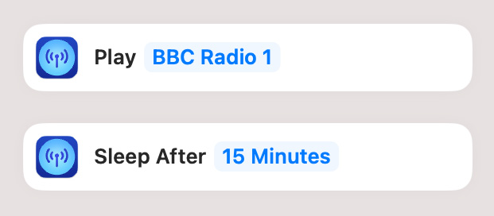

Broadcasts supports automation using Shortcuts. You can perform common tasks like starting/stopping playback, playing specific stations, or adjusting the Sleep Timer.
From the Shortcuts app, create a new Shortcut, then choose the Apps tab of the Search for apps and actions panel, and select Broadcasts. From here, you can see all the currently-available actions, and you can add them to your workflow.
For more information about using Shortcuts, see the Shortcuts User Guide.
See also: Automation using AppleScript